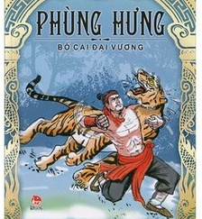

Theo sách Giao Châu ký của Triệu Vương, thì Vương họ Phùng tên là Hưng. Đời đời cha truyền con nối làm Tù trưởng Biên khố ở châu Đường Lâm, gọi là Quan Lang; gia tư giàu có, sức rất là khỏe mạnh, có thể bắt hổ vật trâu. Em là Hãi, cũng có sức khỏe, có thể vác mười nghìn cân đá hoặc chiếc thuyền nhỏ nặng một nghìn hộc đi hơn mười dặm. Những dân Di, Lạo đều sợ tiếng tăm.

Trong đời Đường Đại Lịch, nhân nước ta loạn, hai anh em bèn rủ nhau đi khắp các ấp láng giềng, họ đều xin theo cả, đến đâu cũng không có điều gì là không trôi chảy. Hưng đã thỏa chí bèn đổi tên là Cự Lão; Hãi đổi tên là Cự Lực. Hưng xưng là Đô quân; Hãi xưng là Đô bảo. Theo kế của Đỗ Anh Luân (còn viết là Hàn), người đất Đường Lâm, họ Tuần đem quân đi tuần hành ở các châu Đường Lâm, Trường Phong, các nơi ai nấy đều theo. Uy danh đã vang dậy, bèn phao tin muốn đánh phủ Đô hộ. Khi đó quan Đô hộ là Cao Chính Bình đem quân dưới trướng đến đánh họ Phùng không nổi, tức giận thành bệnh mà chết, Phùng Hưng vào phủ Đô hộ coi việc được bảy năm thì mất. Mọi người muốn lập Hãi. Nhưng người đầu mục phụ tá là Bồ Phá Cần, sức có thể xô núi, xách đỉnh, dũng lực tuyệt vời, nhất định không nghe, lập con Hưng là An và đem quân chống lại Hãi. Hãi né tránh Bồ Phá Cần, bỏ lên ở động Chu Nham, về sau không biết kết cục ra sao. An tôn Hưng làm Bố Cái đại vương; vì nước ta thường gọi cha là “bố”, mẹ là “cái”, cho nên mới đặt tên ấy. An nối nghiệp được hai năm, thì vua Đường Đức Tông phong Triệu Xương làm An Nam đô hộ. Xương vào nước ta, sai sứ giả đem đồ lễ đi trước đến dụ dỗ An. An sắp xếp nghi vệ đầy đủ, dẫn mọi người ra hàng. Người của họ Phùng bèn tan tác đi hết.
Khi Hưng mới chết đã hiển linh, thường hiện hình trong đám dân quê. Nghìn xe vạn ngựa bay trên khoảng ngọn cây nóc nhà. Mọi người nhìn lên thì thấy rực rỡ như mây kết năm màu, văng vẳng tiếng đàn tiếng sáo ở trên trời, lại có tiếng hò hét, kiệu cáng sáng rực, tất cả đều thấy được rành rành. Phàm trong thôn ấp có việc sợ hãi, việc vui mừng thì trước đã có bậc dị nhân ban đêm đến bảo cho người hào trưởng biết. Mọi người cho là thần, lập miếu [1] ở phía tây phủ Đô hộ mà thờ cúng, cầu tạnh cầu mưa, không có điều gì là không linh ứng. Phàm có sự hồ nghi về việc trộm cướp, về việc tranh chấp thì sắm lễ vật đến bái yết trước đền, rồi làm lễ minh thệ, bèn lập tức thấy họa hoặc phúc bày rõ ngay. Người đi buôn bán, sắm lễ vật cầu được nhiều lãi, đều có ứng nghiệm. Mỗi khi vào ngày tạ lễ, người nhiều như núi như biển, bánh xe chật đường. Miếu mạo nguy nga, lửa hương bất tuyệt.
Khi Ngô Tiên chúa lập quốc, quân phương Bắc vào ăn cướp. Tiên Chúa lo lắng; đêm nằm mộng thấy một ông già đầu bạc, mũ áo nghiêm trang đẹp đẽ, quạt lông gậy trúc tự xưng họ tên và nói rằng:
- Tôi đã đem vạn đội thần binh mai phục trước ở chỗ hiểm yếu, Chúa công mau tiến quân chống giặc đi, tức khắc có sức âm trợ, không nên lo ngại.
Đến trận đánh ở sông Bạch Đằng, đúng là thấy trên không trung có tiếng ngựa xe. Trận ấy quả nhiên thắng lớn. Tiên chúa lấy làm lạ, xuống chiếu lập đền miếu to hơn quy mô cũ. Lại cho cờ quạt chiêng trống, điệu múa vạn vũ, cỗ cúng thái lao để cảm tạ. Trải qua nhiều triều đại thay đổi, đã trở thành lễ cổ. Năm Trùng Hưng thứ nhất (1285) Hoàng triều có sắc phong là “Phụ hựu đại vương”, năm Trùng Hưng thứ tư (1288), ban thêm hai chữ “Chương tín”. Năm Hưng Long thứ 20 (1312), lại ban thêm hai chữ “Sùng nghĩa”. Cho đến nay anh linh uy thế càng tăng, hương hỏa bất tuyệt.
Chú thích:
[1] Đền thờ ở làng Cam Lâm, huyện Phú Thọ, Sơn Tây (nay là Hà Tây).